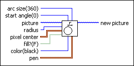
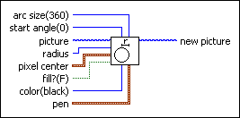
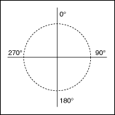

Draw Circle by Radius VI
Owning Palette: Picture Functions VIs
Requires: Base Development System
Draws a circle based on a specified radius and center point.

 Add to the block diagram Add to the block diagram |
 Find on the palette Find on the palette |
Owning Palette: Picture Functions VIs
Requires: Base Development System
Draws a circle based on a specified radius and center point.

| Add to the block diagram |
Find on the palette |
 |
arc size determines the degree value of the circle you want to draw. This value can range from -360 to 360. For example, a value of 360 creates a complete circle, and a value of 180 creates a semicircle. | ||||||||||||||
|
start angle determines where the arc begins. | ||||||||||||||
 |
picture is the picture to which you want to add the circle. The default is an empty picture. | ||||||||||||||
|
radius determines the size of the circle, in pixels. If, for example, this value is 40, the radius of the resulting circle is 40 pixels. | ||||||||||||||
 |
pixel center contains the coordinates around which the VI draws the circle.
| ||||||||||||||
 |
fill? specifies whether to fill the interior. If FALSE (default), the VI draws only the outlines. | ||||||||||||||
 |
color sets the pen color to use when drawing the oval. If unwired, the VI uses the last color specified as the pen color. You can wire a color box constant to this input. |
||||||||||||||
|
pen sets the width and style of the pen the VI uses to draw the picture.
| ||||||||||||||
 |
new picture is the picture that contains the new image. You can wire this output to any other picture input to add more drawing instructions to the picture. You also can wire this output to the Picture to Pixmap VI to obtain an image data cluster. You then can use the Graphics Formats VIs to save the image data to a file. You can wire this output to the Concatenate Strings function to concatenate the output from multiple Picture Functions VIs so that they draw on a single picture control. |
The Draw Circle by Radius VI uses the information you specify and calls the Draw Oval VI.
A rectangle specifies the size of an oval that contains the arc. Thus, the arc may not fill the whole rectangle. LabVIEW specifies the angles that describe the arc in degrees. It can range from –360° to 360°, with positive angles appearing clockwise, and negative angles appearing counterclockwise. Zero degrees is straight up.
LabVIEW measures all angles as though the enclosing rectangle were square. Thus, a line from the center to the upper-right corner describes an angle of 45°. The following illustration shows the conventions used in specifying the angle of a point of an arc.
